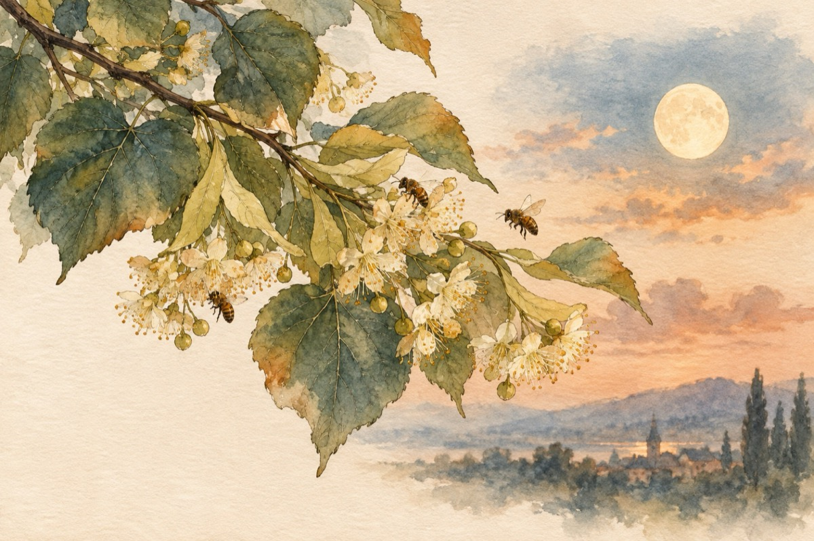

Parfum de tei
E seara Sfântului de tei
Când soarele se duce peste zare
Când luna cu bagheta dragostei
Te cheamă la această sărbătoare
Când nici albinele nu pleacă la culcare
E seara Sfântului de tei!
Când totul în parfum se scaldă
Și totul freamătă în jur
Și florile de tei te-mbată
Iubito, în genunchi îți jur
Iubirea mea adevărată!
Nu-ți risipi privirea-n zare
Plutește în parfum de tei,
E-un adevăr, nu-i o-ntâmplare
Privește-adânc în ochii mei,
E seara Sfântului de tei.
Parfum de tei, parfum de tei,
E ca și viața trecătoare.
Vino iubirea mea de vrei
E-a dragostei chemare!...
E seara Sfântului de tei.
Parfum de tei, de dor, de-amor,
Și luna îl respiră
E seara-ndrăgostiților,
Scăldată toată în lumină!...
Parfum de tei, parfum de tei
E elixirul dragostei!...
E seara Sfântului de tei.
Vasile Groza